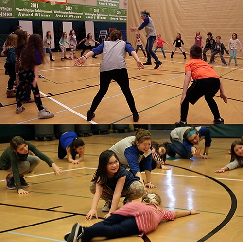

Portfolio
Deb Currier
Department of Theatre & Dance

Putting Social Justice at the Heart of Theatre Education
Overview
Set your life on fire. Seek those who fan your flames. -Rumi
"Immersing “students actively in the people and problems of society in engaging ways: by creating meaningful, immersive, enlivening content or processes for exploring social justice issues” is the keystone of the Theatre Education program. I live in the hope that I am helping students to “grow into responsible citizens who participate actively and productively in society” through my courses, practicum opportunities, and advising."

When I read the call for this year’s Showcase, focused on Engaging Social Justice, I was excited and looking forward to what my colleagues would teach me in their portfolios, as it is a topic near and dear to my heart. I am continually seeking out new and innovative approaches that weave together arts and social justice pedagogies, as the theatre education program I direct is based on a social justice thematic model of engagement. I was honored to receive a nomination from a senior student in the program who saw the connections between what she has been learning with the theme of this year. Immersing “students actively in the people and problems of society in engaging ways: by creating meaningful, immersive, enlivening content or processes for exploring social justice issues” is the keystone of the Theatre Education program. I live in the hope that I am helping students to “grow into responsible citizens who participate actively and productively in society” through my courses, practicum opportunities, and advising. I have found theatre arts education to be a wonderful way not only to “set your life on fire” but also to teach our future educators how to “fan the flames” of social justice and change in healthy, engaging and meaningful ways.
"In order to truly engage students in social justice theatre and its pedagogy, you must build trust between you first and foremost. Moreover, to build trust I must dialogue with students rather than monologue at them, and this means actually listening to what they say they want from a course or an experience… a difficult and sometimes fraught process, for both myself and the students."
The pedagogy I impart to future teaching artists is an amalgamation/integration of Theatre of the Oppressed (Augusto Boal) techniques, Applied Theatre, Theatre for Social Change, and traditional theatre, arts and education pedagogies. As a theatre student in the 1990s, I was continually drawn to and moved by theatre as an agent for social change, devouring every book and signing up for every workshop available on the subject. I found myself making the most meaning from work I did with my peers and youth which experimented with and employed Theatre of the Oppressed techniques. In the late 1990s/early 2000, I was lucky enough to study briefly with Augusto Boal, the leading practitioner and ‘inventor’ of Theatre of the Oppressed techniques, in a series of 3-day intensives he offered in cities along the West Coast. I showed up in the Bay Area in CA, then again in Portland, OR and yet again in Seattle, WA, at which time Boal laughed and reminded me that although he appreciated my enthusiasm (and enrollment dollars), I was to, “be as the baby, beginning with nothing, and learn it new again.” I know the impetus of this kind reminder was centered on my not being “that” participant who eagerly anticipated his every next move, having done the workshop twice before in a matter of weeks. However, the idea of “beginning with nothing” and “learning anew” has stuck with me throughout my teaching career, forming the basis of my pedagogical approach to everything. In order to truly engage students in social justice theatre and its pedagogy, you must build trust between you first and foremost. Moreover, to build trust I must dialogue with students rather than monologue at them, and this means actually listening to what they say they want from a course or an experience… a difficult and sometimes fraught process, for both myself and the students.
However, the rewards of this type of inquiry are well worth the perilous journey of co-creating course content and expectations (which is exactly what happens when it is successful) and the students learn by example how empowering it is to be invested in one’s own learning trajectory. Yes, it does mean what you might be thinking: I often come to the first day of a class with a syllabus that contains a partially blank calendar with our meeting dates on it, a list of activities and suggested assignments, and the learning goals as stated in the catalogue – which we amend as a class through our open discussion of what the students wish to learn. It is terrifying and magical in equal measure. However, it never fails to empower the students to take ownership of their learning and become more willing to engage in the “hard-a** stuff,” as one student so delicately put it. (See THTR 428 Open Syllabus).
Sample Courses and Outreach
Every course in the Theatre Education concentration has social justice pedagogy at the heart of the class, and the students do outreach/practicum projects and residencies employing social justice theatre activities when working with youth. I specifically seek practicum opportunities in under-served, county schools (Everson, Nooksack, Ferndale, Acme, and Mount Vernon).
The following courses in the Theatre Education program are designed around pedagogy and themes of social justice.
THTR 353 and 354: The Multicultural Outreach Tour (MOTley Crew) tours to 19-21 elementary schools in Whatcom and Skagit Counties every spring quarter with “page to stage” stories from cultures all over the world that address the theme for that year. Past themes include Honesty, Cooperation, Anti-Bullying, Friendship, Respect, and the 2018 tour theme is “Tolerance.” The students in the troupe spend winter quarter researching and locating stories and folk tales from various cultures that address the theme, and then building the show. Spring quarter is spent out in the schools performing the 45-minute, all-school assembly that is the result of our winter quarter’s work (See MOTley Touring Calendar). MOTley performs for more than 6,000 youth ages K-5th grades and their educators every spring quarter, with a different theme and different stories every year (See Librarian of Basra Sample Script)
THTR 350: Theatre for Youth I: The course was recently internationalized, but the pedagogical approach has always been about how to utilize student-driven, social-justice themed lesson plans and units to teach the art of theatre and vice versa: how to use theatre to teach across curricular areas. (See THTR 350 Syllabus and sample activities: Devised Activity,Picture Monologues, Residencies, and Wild Thing).
THTR 450: Theatre for Youth II: This course is a practicum course where students lead an after-school theatre program for 3rd-5th graders at Everson and Nooksack Elementary schools. Approximately 50% of the youth who participate in the K.A.S.T. (Kids’ After School Theatre) are English Language Learners and my students and I work mainly using Theater of the Oppressed activities and techniques, as so much of it is based in image work and communication rather than verbal approaches. (See THTR 450 Sample Lesson Plans, video, and Showcase Program)

THTR 452: Secondary Theatre Techniques: The Secondary Theatre Techniques class does a service-learning project every spring with the Visions Treatment Center, a residential treatment program for young women ages 13-21 and the entire residency is based on Theatre for Social Justice pedagogy. The students work closely with the in-patient girls to devise and write their own material for performance using image and forum theatre techniques, culminating in a final showcase of the girls’ work. I have attached a sample lesson from that class – “Picture Moment Scenes” – which is a lesson I lead my class through demonstrating how to utilize theatre techniques to teach social studies, empathy, and perspective. (See THTR 452 Syllabus, Techniques, Picture Moment Scenes Lesson Plan, and Reflections)
The Secondary Theatre Techniques class also works with Fairhaven Middle School students in an after-school program during spring quarter. The librarian and I work together to identify the most popular books the students are currently reading, and then I adapt portions of the books into 5-10 minute scenes and one-acts. The WWU students in the class then direct the middle school students in the adapted scenes, culminating in a showcase performance at the end of the quarter. The middle school students work on any aspect of theatre they are interested in to make the showcase happen, from acting to sets, lights, costumes and stage management while being mentored through the process by the WWU theatre education students.
Making Meaning
"One of the most rewarding aspects of integrating social justice themes, issues, and approaches into theatre education is that it is very often the first exposure the students have to the creative and effective techniques of theatre for youth. It is also their first realization that theatre is an excellent tool for exploring and teaching social justice to learners of just about any age."
One of the most rewarding aspects of integrating social justice themes, issues, and approaches into theatre education is that it is very often the first exposure the students have to the creative and effective techniques of theatre for youth. It is also their first realization that theatre is an excellent tool for exploring and teaching social justice to learners of just about any age. WWU Theatre Education students have completed practicum projects in every elementary, middle, and high school in Whatcom County, as well as numerous projects in Skagit County schools. When the WWU students and I visit and work with youth, we focus on teaching theatre through games and various activities from the “Arsenal of the Oppressed,” which is the umbrella term for Boal’s work, and creative writing and devising based on social justice issues the youth are dealing with and facing in their lives.
Theatre as Exploration of Social Inequalities
"Innocuous as it may sound, the focus of the activity is about justice and fairness, and the creative aspect of theatre allows young people to voice and explore themes of social inequality in a non-threatening or confrontational way that elicits meaning making in deep and lasting ways—while still being original, fun, and theatre-driven."
One example activity that is a staple of our pedagogical arsenal, because it works for any age, is a theatrical devising lesson titled, “Commercials for Products that Don’t Exist.” Innocuous as it may sound, the focus of the activity is about justice and fairness, and the creative aspect of theatre allows young people to voice and explore themes of social inequality in a non-threatening or confrontational way that elicits meaning making in deep and lasting ways—while still being original, fun, and theatre-driven.
The bridge-in to the activity consists of a simple question posed to the participants: “If you could change one thing about the world, what would it be?” Students then share around the circle in one sentence or phrase what their answer is, with no commenting/judging from others. We then play a physical warm-up game connected to inventions, discoveries, or ideas that address the “problem” each student identified in the bridge-in. This is followed by a brief discussion of and lesson on the elements of a commercial (product, slogan, jungle, target audience, price, etc.). Next, participants are put into small groups of 3-5 each, with a WWU student leader in each group as a guide, and the group proceeds to define, discuss, and decide on a product they are going to “invent” that addresses the problem of one “thing in the world that needs changing” they find to be most important to solve. Using provided worksheets, the groups then write their own commercial for their new product, learning theatrical terms such as blocking, scene-work, character, setting, dialogue, rehearsal, etc. in the process of staging their original script. The commercials are then performed for the rest of the class, one by one, with guided discussion and feedback using the Liz Lerman Critical Response Tool. This is a method of feedback that elicits meaningful responses to original artwork that empowers the artists to ask questions of the audience first and foremost.
We have had commercials for the Anti-Bully-O-Meter (self-explanatory), The Great Equalizer (a machine much like the Sneetches machine (à la Dr. Seuss) but when you come out, you see everyone for who they are inside and not just what you see as the color of their skin, what they are wearing or what language they speak) and, of course, an array of “silly” commercials that cut to the core of social and personal issues but disguise them with humor. One heart-breaking example came from a weeklong workshop with homeless teens where we focused on improvisation games and activities that led to deeper “Theatre of the Oppressed” explorations. A group in the workshop wrote and performed a commercial for their original product, the “Mac-N-Daq,” marketed to “parents with problems.” The Mac-N-Daq was a robotic assistant who could be programmed to look like your teen, but would always be available to provide greasy hangover food (McDonald’s fries) and mix your daiquiris when you could no longer get off the couch. The Mac-N-Daq was “so life-like, you won’t even know it’s not your kid! And the durable silicone body means you can push, hit, and even kick your Mac-N-Daq all you want and never go to jail!” The commercial finished with a short jingle and a “Call now!” directive… and then wild, uproarious applause from the audience of their peers and us—stunned and grateful leaders. Of course, this one original commercial did not solve the social issue or bring justice to the culpable parents, but it most certainly did empower the youth performers by giving them a creative, immersive, engaging way to speak their truth. The Critical Response session that followed these commercials (this is just one example of a host of stunning creations) was life-changing for myself and my student leaders, as we listened to what the participants had to say about their creative work, and asked meaningful questions that would not have arisen through a traditional theatrical scripted directing process.
Theatre as an Agent for Social Justice and Change
When given the opportunity to teach a course outside of the Theatre Education program, I focus on Theatre for Social Justice/Change, Applied Theatre and Radical Theatre—all of which have pedagogies and techniques that interweave with each other. I have found these courses to be incredibly rewarding for both myself and the students, as all theatre is political by its very nature. We don’t often carve out time to truly explore the power theatre has as an agent for social justice and change. Even though the classes are listed as “THTR 428: Special Topics in Dramatic Literature,” I always approach the courses with a learner-centered pedagogy that blends theory with direct practice. This is often quite terrifying for the students as first (or so they tell me), but by directly modeling the practice of “becoming comfortable with discomfort” the students and I can build a class culture that engenders honest and brave discussions and discoveries. (See Brave Space Discussion Guidelines)
As one student who has taken both theatre education and special topics classes with me wrote:
Her pedagogy immerses students in the process of asking compelling questions, deconstructing and reconstructing social issues through verbal and nonverbal languages. She asks her students to become comfortable with discomfort, with knowing that there is no one right answer. Together, we explore possible solutions from multiple perspectives, assessing their feasibility and consequences.
In specific response to the THTR 428: Radical Theatre course offered in the fall of 2017, one student wrote:
Her methods apply outside the theatre as well. To give one recent example: in class this quarter, we discussed the necessary learning environment for conversations on politically-charged issues, especially in the wake of the 2016 presidential election and national academic discourses on the creation of "safe spaces." As a community, we discussed principles for an alternative: a "brave space," where all students are encouraged to take risks and speak on sensitive topics, while leaving room for others' voices and being open to critique.
The Theory/Practice Balance
I have found the key that unlocks students’ passion for not just identifying social justice issues but also moving toward actionable planning is blending theory and practice. The students don’t just read textbooks and articles and discuss them; they are on their feet and actively engaging in trying out the approaches, exercises, games and theories they are learning about. When the topic is Theatre for Social Justice (i.e.: Radical Theatre, Applied Theatre, etc.), this means the students are engaged and immersed in practical projects that push boundaries, shake up norms and (often) irritate/frighten the administrative powers that be on campus and beyond.
For example, the final Happenings projects in the Radical Theatre class consisted of four radical theatrical events occurring simultaneously on campus during the lunch hour. The topic of these Happenings was “Pol-U-Tics” and each event explored various aspects of education and the often hidden political agendas behind the seemingly arbitrary demands and rules placed on students. The students in each group devised and designed their own social justice issue they would address within the theme. The result was a series of dynamic, meaningful, and often shocking radical theatre events that engaged various students from all over campus in a game or performance that engendered inquiry and dialogue on the injustices creatively presented by the Radical Theatre students.
The “poem” activities are samples from my Applied Theatre and Radical Theatre classes. (See Poem Activities, THTR 428 Applied Syllabus, and THTR 428 Radical Syllabus).
The “I Feel” statements and “Class Choreopoem” are from an activity we did in the Applied Theatre class. We had class at 8:30 AM the morning after Election Day, November 9, 2016. It was not what had been planned in class, but was a result of listening to the students’ needs to express themselves and respond to the somewhat surprising results of the election. The students were asked to write, anonymously, on a 3x5 card one statement starting with, “I feel.” Then those statements were crafted into a performative piece as a class. This is one example of an activity which I have used to “give voice to the silenced” when I work with marginalized/under-represented groups. As a social justice arts exercise, it allows for anonymity in expression but still honors individual thoughts and reactions to a given situation. The activity of having the group not only hear their collective responses but also shape those feelings/reactions into a collaborative artistic piece is powerful and healing.
The students in the social justice theatre courses also have participated in various conferences and symposiums, both specific to theatre as well as general education. One recent example of the “outside the classroom” work the students participated in was an interactive Image Theatre workshop at the Back to the Sandbox: Art and Radical Pedagogy summit in January, 2018. I was slated to present a workshop at the conference, and had the amazing opportunity to have nine WWU theatre students present with me. Our workshop explored the question, “What does radical pedagogy look like?” As outlined in the summit brochure, “This interactive, participatory workshop introduces Image Theatre techniques, first developed by Augusto Boal in his Theatre of the Oppressed work, as a pedagogically radical approach to generating engaged group dialogue, creative participation and actionable ideas."
As terrifying as it was to invite 150 educators to co-create a 3-dimensional vision of what problems plague our current educational systems and then an image of what the solution might look like, it was a challenge worth the risk. The resulting image-driven, heated dialogue about the actions necessary to enact change in the system was one of the best “live” experiences in theatre for social justice I could have imagined for my students, myself, and the educators at the summit. (See Sandbox Image Workshop)
Conclusion
Engaging social justice in teaching is not just a tool, trick or technique that an educator uses to appear “woke” or on board with the latest hashtag movement. In fact, it is quite the opposite of an easy means to an engaged classroom. It is dangerous, inciting and ultimately some of the most difficult teaching I have ever done – and the most rewarding. There is no way to teach social justice without engaging fearlessly with your students, willing yourself to allow for the cracks to show in your teaching armor as you demonstrate, firsthand and right in front of them, the necessity of being comfortable with discomfort and daring to fail. Teaching social justice demands a constant leaping into uncharted waters, even with the most detailed lesson plans, and celebrating the messy, chaotic, meaningful, honest and brave experiences this work brings.